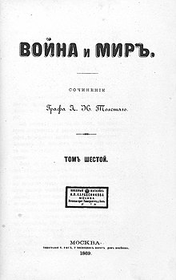
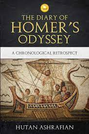
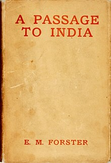
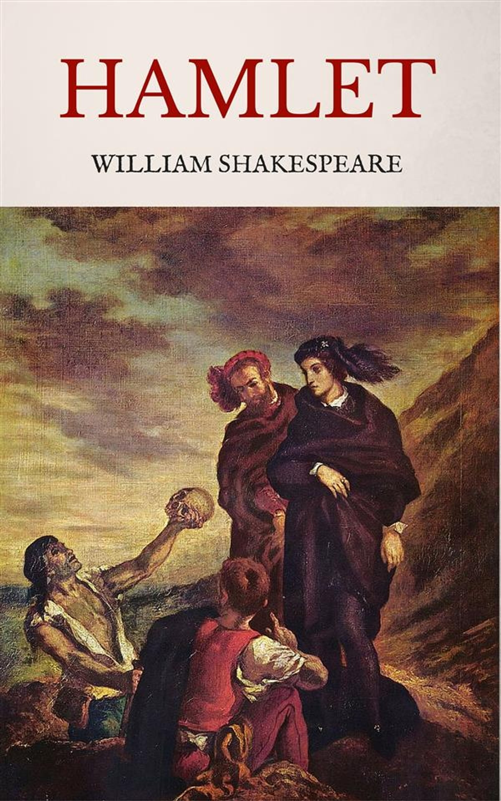

BOOK GALLERY
WAR AND PEACE

Author - Leo Tolstoy
War and Peace is a literary work by the Russian author Leo Tolstoy that mixes fictional narrative with
chapters on
history and philosophy. It was first published serially, then published in its entirety in 1869. It is
regarded as Tolstoy's finest literary achievement and remains an internationally praised classic of world
literature
Read More
HOMER'S ODYSSEY

Author - Homer
The Odyssey is one of two major ancient Greek epic poems attributed to Homer. It is one of the oldest extant
works of literature still
widely read by modern audiences. As with the Iliad, the poem is divided into 24 books. It follows the Greek
hero
Odysseus, king of Ithaca, and his journey home after the Trojan War.
Read More
A PASSAGE TO INDIA

Author - E. M Forster
A Passage to India is a 1924 novel by English author E. M. Forster set against the backdrop of the British
Raj and the Indian independence movement in the 1920s. It was selected as one of the 100 great works of 20th
century English literature by the Modern Library[1] and won the 1924 James Tait Black Memorial Prize for
fiction.Time magazine included the novel in its "All Time 100 Novels" list. The novel is based on
Forster's experiences in India.
Read More
HAMLET

Author - William Shakespeare
The Tragedy of Hamlet, Prince of Denmark, often shortened to Hamlet is a tragedy written by
William Shakespeare sometime between 1599 and 1601. It is Shakespeare's longest play, with 29,551 words. Set
in Denmark, the play depicts Prince Hamlet and his attempts to exact revenge against his uncle, Claudius,
who has murdered Hamlet's father in order to seize his throne and marry Hamlet's mother.
Read More
THE LORD OF THE RINGS

Author - J. R. R. Tolkien
The Lord of the Rings is an epic high-fantasy novel by English author and scholar J. R. R. Tolkien. Set
in Middle-earth, the story began as a sequel to Tolkien's 1937 children's book The Hobbit, but eventually
developed into a much larger work. Written in stages between 1937 and 1949, The Lord of the Rings is one of
the best-selling books ever written, with over 150 million copies sold.
Read More